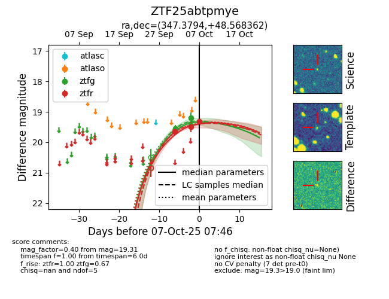
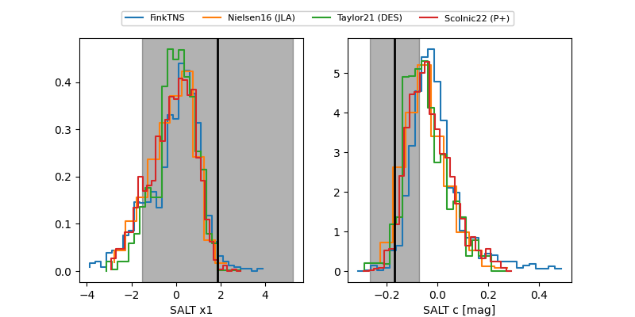

FINK: ZTF25abtpmye
Lasair: ZTF25abtpmye
ALeRCE: ZTF25abtpmye
ZTF25abtpmye (ztf,fink)
equatorial (ra, dec) = (347.3794,+48.56836)
galactic (l, b) = (106.0775,-10.93960)


last ztfg=19.45, ztfr=19.31
4 ztfg, 3 ztfr detections